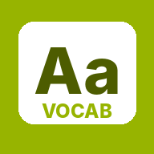

FOSBOS Weiden
Fachschaft Englisch

Vocab TrainerLearn and practise your vocabulary. Your progress is saved on your device only.
Year 12 class password needed
Society and Media
🔒News in Your FeedReading Lab · social media as a news source
🔒Unsafe by Design?Reading Lab · online harms & fake reviews
Year 13 class password needed
Societal Challenges
🔒A better addressReading Lab
🔒The Pink TaxReading Lab
🔒Wage GapReading Lab
Literature
🔒Multiple Matching TrainerThe Underground Railroad